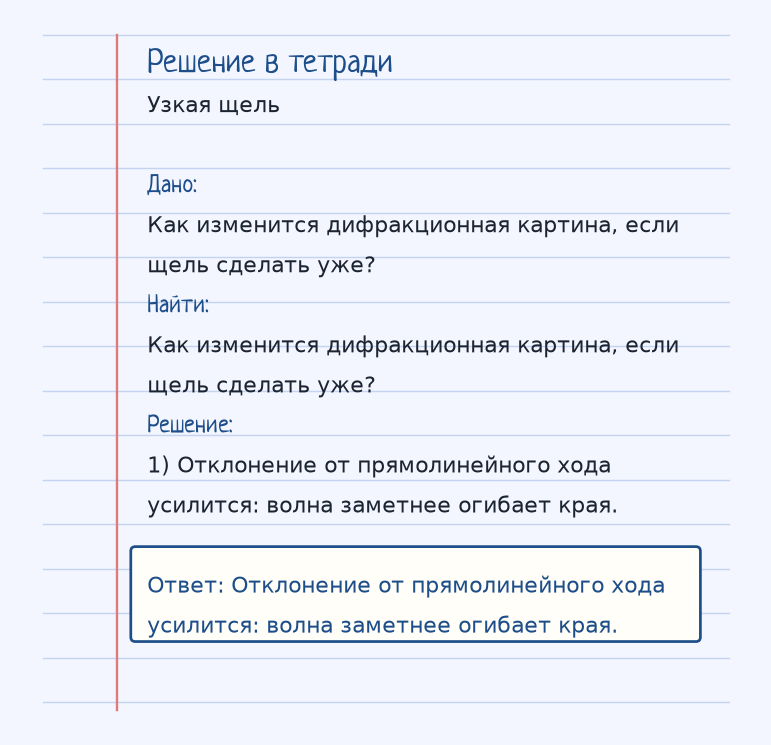
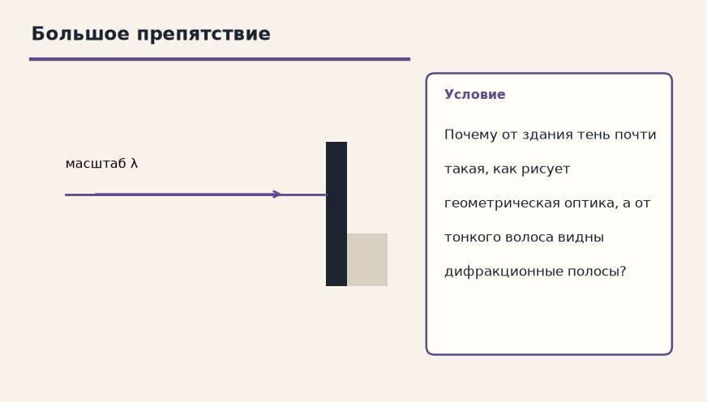

Глаз врёт спокойно. Спроси, куда на самом деле пошёл луч и что было на границе. Ниже — как устроена тема «Дифракция света», где обычно спотыкаются, и два разбора до ответа.
Показ к теме. Это условие, не шпаргалка.
Сначала смысл
Огибание светом препятствий (отклонение от прямолинейного распространения). Чем меньше размер препятствия (щель), тем сильнее волна огибает его.
Дифракция — огибание светом препятствий, отступление от прямолинейного луча. Чем уже щель или меньше препятствие по сравнению с длиной волны, тем сильнее волна заходит в область тени.
Широкие ворота почти не «загибают» свет, узкая щель даёт заметную картину. Морская волна так же огибает маленький камень и разбивается о большой утёс, если камень сравним с длиной волны, а утёс гораздо больше.
Вместе с интерференцией дифракция доказывает: свет — волна. Геометрическая оптика с прямыми лучами — предел, когда препятствия намного больше λ.
Как решать. Выпиши величины с рисунка к примеру «Узкая щель». Условие: Как изменится дифракционная картина, если щель сделать уже? Дальше подставляй их в формулу этой темы и сверяй шаги с решением под картинкой — оно закрыто, пока не попробуешь сам. Второй рисунок, «Большое препятствие», тот же приём на других данных: Почему от здания тень почти такая, как рисует геометрическая оптика, а от тонкого волоса видны дифракционные полосы? Если оба примера сходятся, тему можно нести на контрольную.
Как читать формулу
Чем меньше щель, тем сильнее отклонение от прямой. Интерференция и дифракция — волновые доказательства.
Чтобы осталось в голове
Волна в море огибает маленький камень, но разбивается о большой утес.
Морская волна огибает маленький камень и разбивается о большой утёс.
Где обычно спотыкаются
Дифракция не отменяет закон прямолинейности в однородной среде без препятствий. Она заметна, когда размер преграды сравним с длиной волны.
Дальше две задачи. Сначала схема. Когда сам набросаешь ход, открой тетрадь — там дано, перевод в СИ, шаги и ответ в рамке.
Разбор 1
Узкая щель
Как изменится дифракционная картина, если щель сделать уже?
На схеме только условие. Ответа там нет — его ещё надо получить.
Смотри на порядок, не на красивое число: сначала единицы, потом формула, потом ответ.
Дано. Как изменится дифракционная картина, если щель сделать уже?
В СИ.
Найти. Как изменится дифракционная картина, если щель сделать уже?
Решение.
Отклонение от прямолинейного хода усилится: волна заметнее огибает края.
Отклонение от прямолинейного хода усилится: волна заметнее огибает края.

Разбор 2
Большое препятствие
Почему от здания тень почти такая, как рисует геометрическая оптика, а от тонкого волоса видны дифракционные полосы?

На схеме только условие. Ответа там нет — его ещё надо получить.
Смотри на порядок, не на красивое число: сначала единицы, потом формула, потом ответ.
Дано. Почему от здания тень почти такая, как рисует геометрическая оптика, а от тонкого волоса видны дифракционные полосы?
В СИ.
Найти. Почему от здания тень почти такая, как рисует геометрическая оптика, а от тонкого волоса видны дифракционные полосы?
Решение.
Здание намного больше длины световой волны, огибание слабо.
Волос сравним с масштабом, где волна уже заходит в тень.